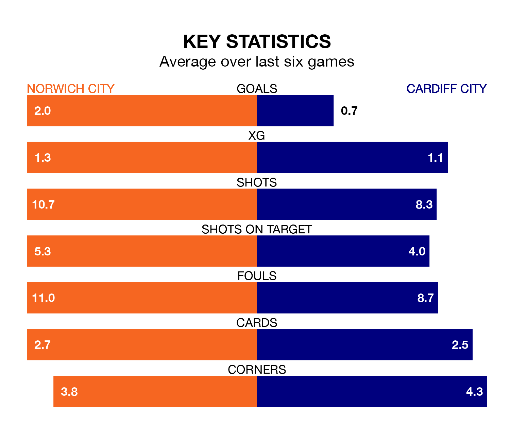

Cardiff City travel to Norwich City on Saturday in EFL Championship.
The visitors come into the game on the back of a defeat in their last match, having lost to West Bromwich Albion 2-0 away.
The Canaries, meanwhile, won their last match, 4-2 against Watford, with their goals scored by Ashley Barnes, Christian Fassnacht, Gabriel Sara and Joshua Sargent.
With 54 goals in 32 games so far this season, Norwich are scoring more than average in the league with 1.7 goals per game. But they are conceding more than average too, letting in 49 goals at a rate of 1.5 per game.
Cardiff, meanwhile, are below average scorers, with 1.2 goals per game, compared to a league average of 1.4. They have conceded 1.4 goals per game.
In the last 10 years, Norwich and Cardiff have played each other on 12 occasions. Norwich won nine of them and Cardiff three.
On average, the Canaries scored 2.0 goals and the Bluebirds 1.3 in those matches.
Their last meeting was on November 11, when Norwich won 3-2 away.
Norwich City are in good form in EFL Championship, with four wins and a draw from their last six games.
With two wins and four losses over that period, Cardiff City's form is much worse – they have taken six points from 18, compared to the Canaries' 13.
In Jon Rowe, the home side have one of the league's sharpest shooters so far this season. He has notched 12 goals in 28 appearances, to sit sixth in the scoring charts.
His goal rate of one every 162 minutes is quicker than that of Ike Ugbo, the Bluebirds' top scorer with a goal every 206 minutes, and a total of six goals in 25 games.
Norwich are eighth in the table after 32 games, of which they have won 14 and drawn six, earning 48 points.
The visitors are six places behind Norwich in 14th, with 12 wins and four draws putting them on 40 points.
Saturday's match will be refereed by Darren Bond, who has taken charge of eight EFL Championship games so far this season, issuing one red card and booking 36 players. He has awarded four penalties.
The last Cardiff game Bond refereed was the 2-1 win at home against Sheffield Wednesday on August 26. He is yet to oversee a match featuring Norwich this season.
Updated: 12:06 (UTC), 15/02/24